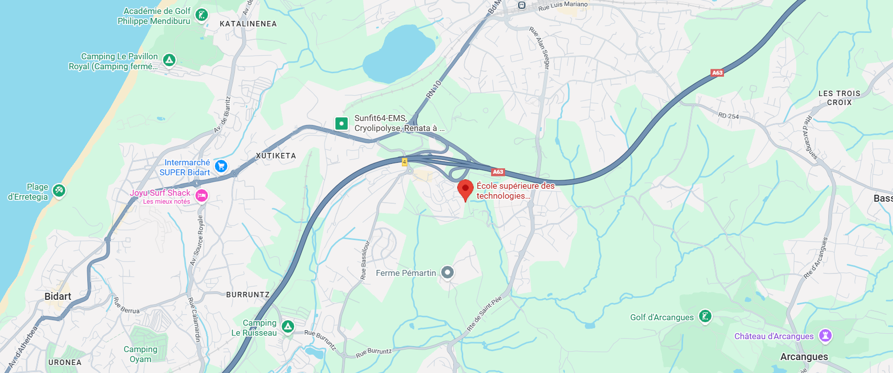

Titre intro
Intro
Nos produits de saison

Comment accéder au maraicher
Le point de vente est situé à Bidart, à proximité de l'autoroute et facilement accessible en voiture ou en transports en commun.
Intro
Le point de vente est situé à Bidart, à proximité de l'autoroute et facilement accessible en voiture ou en transports en commun.